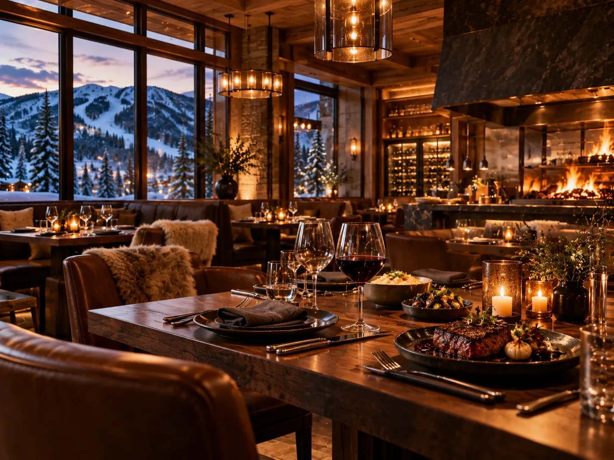
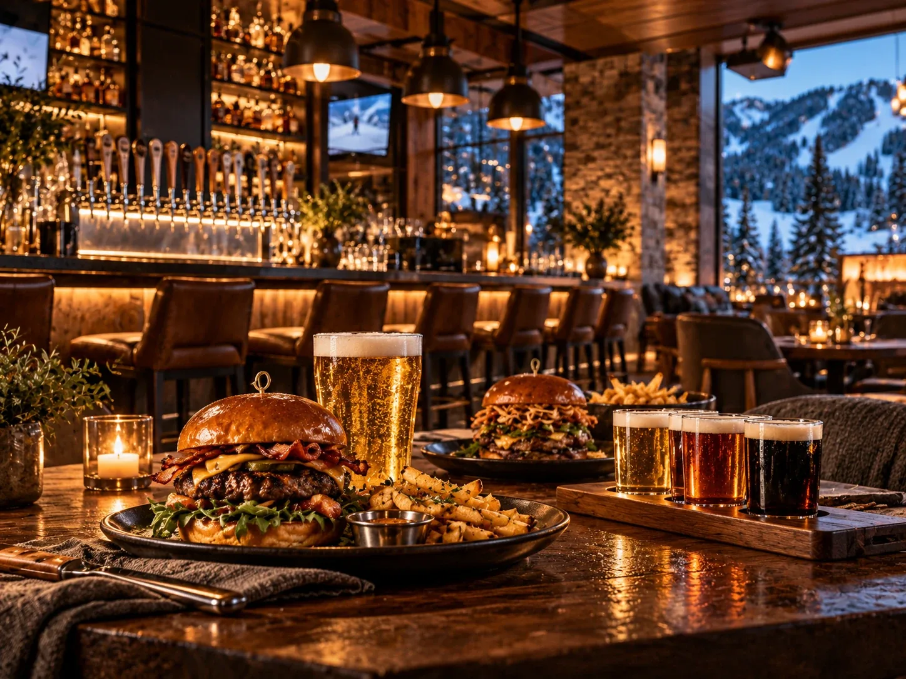

Canyons Village is not a restaurant destination and does not need to be. It covers the two kinds of evening a ski week actually produces.

Set expectations correctly and the village works well. It is a ski village rather than a town, so the range is narrower than Main Street. What it has is close, which matters more than it sounds after a full day on snow.
The two evenings a ski week produces
The proper dinner
Most groups want one good dinner out during a week. The village has upscale options including a steakhouse, which covers the occasion without a drive at the end of it.
During a holiday week this needs booking well ahead. Tables for eight at seven o'clock in February are not available on the day.
The evening nobody wants to organise
More common, and more important. Everyone is tired, somebody has wet gloves drying, and the plan is a burger and a drink within walking distance. Casual options in the village handle this, and so does a kitchen.

Eating on the mountain
On-mountain restaurants fill faster than the lifts during a busy week and empty by half past one. Eating at eleven or at half past one removes most of the queuing, which is the single most effective habit on a crowded mountain.
If you are staying close to the base, going back to the unit for lunch beats both. It is cheaper, warmer, and it produces the afternoon reset that keeps children skiing later in the week.
What to book before you travel
- One smart dinner, for the night you want it, with a table for your actual group size.
- A spa treatment if anybody wants one, because those fill during peak weeks too.
- Nothing else. Leave the rest of the week flexible, because weather and tiredness will rearrange it anyway.
Canyons Village is for convenience, not for a culinary week. Plan one good dinner there, use the casual places when nobody can face more than that, cook a few nights, and go into town once if you want a proper evening out.
Common questions
Are there restaurants in Canyons Village?
Yes, including upscale dining such as a steakhouse and casual options for a burger and a drink. The range is narrower than Main Street, but everything is within walking distance.
Do I need to book restaurants in Park City in advance?
For a holiday week, yes, particularly for larger groups and prime times. Tables for eight in February are not generally available on the day.
Is it better to eat on the mountain or go back to the unit?
If you are staying near the base, going back is cheaper and avoids the midday queues. If you stay on the mountain, eat before noon or after one.
The villa this guide comes from
We own a Premier Two-Bedroom Villa inside Westgate Park City Resort, in Canyons Village. It is 1,100 square feet, two king bedrooms and two queen sleeper sofas, so it sleeps eight in one unit. Full kitchen with a centre island, two bathrooms, in-unit laundry, and a short walk to the Red Pine Gondola.
It is available for Presidents' Week 2027, 13 to 20 February, and we rent it ourselves rather than through an agency.